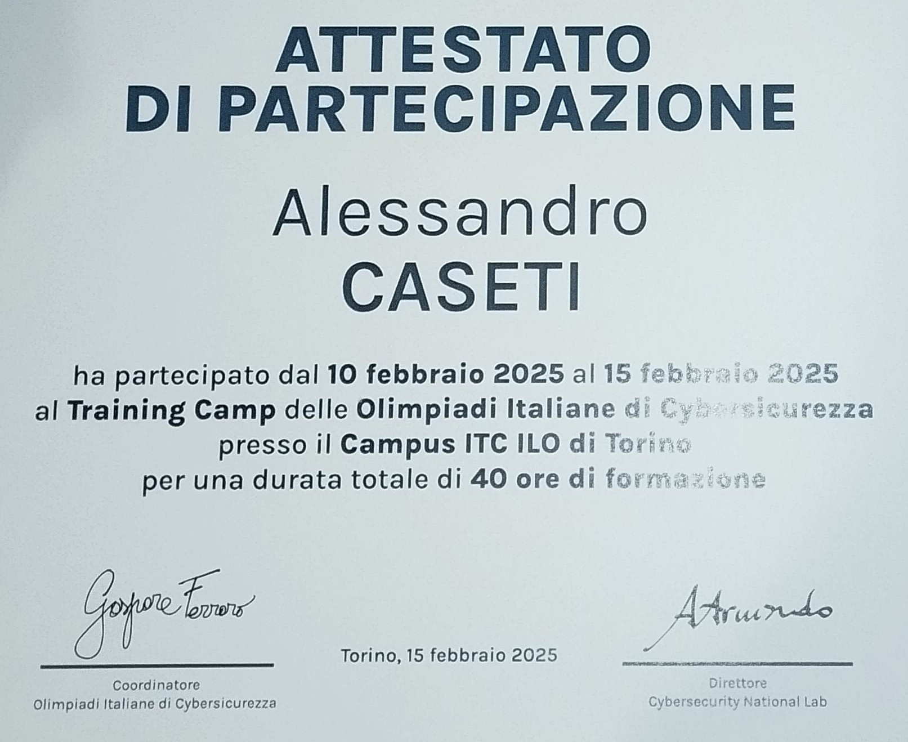
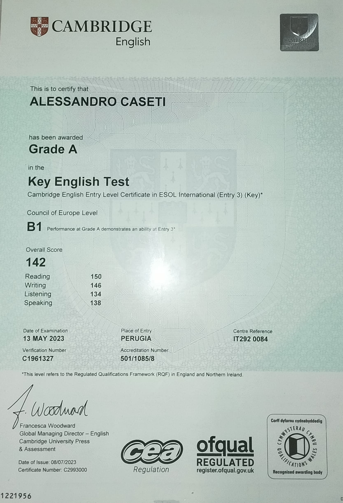
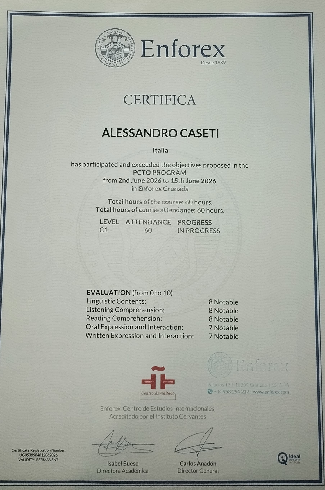
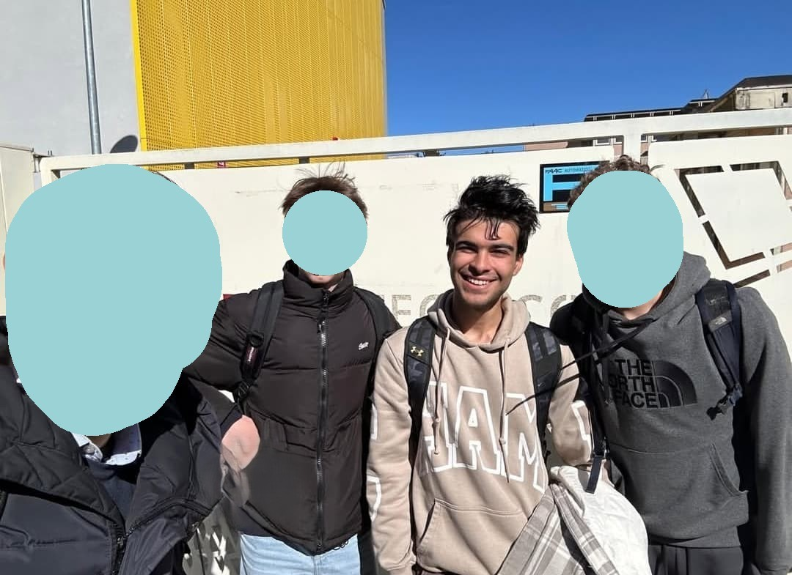
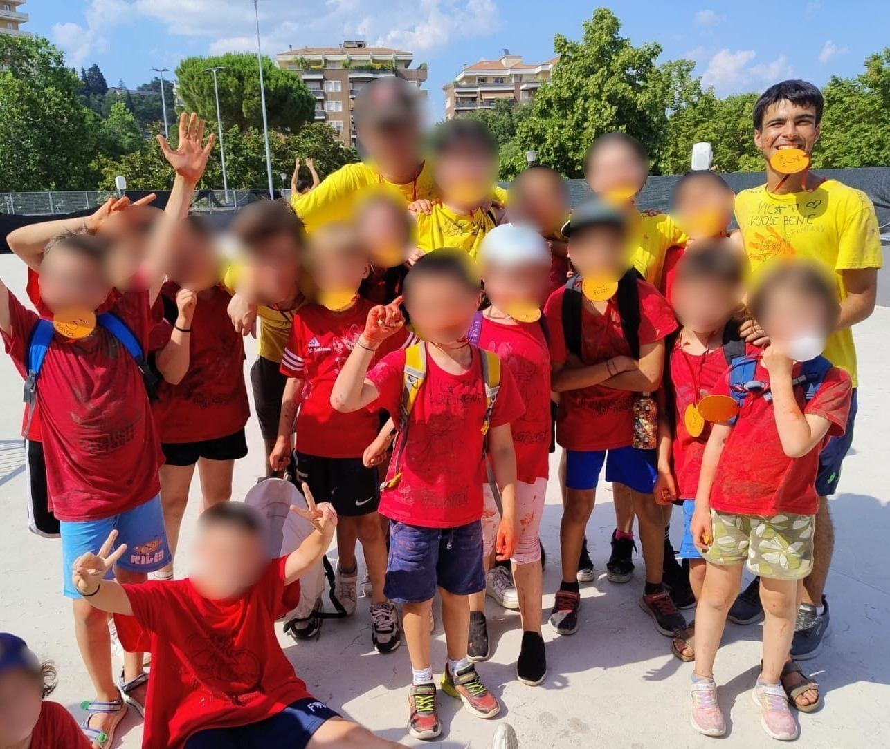
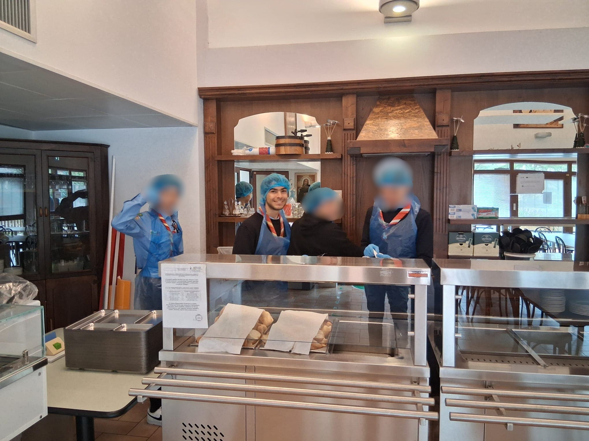

Formazione & Traguardi
Il mio percorso attraverso certificazioni ufficiali, gare nazionali ed esperienze pratiche che mi hanno formato professionalmente e umanamente.
01 / Certificazioni

Partecipazione Training Camp
Certificazione ufficiale Olicyber per aver partecipato attivamente al camp di studio totale di 40 ore in una settimana a Torino per la Cybersecurity.
02 / Certificazioni linguistiche

B1 in inglese (3° media)
Ceritificazione presa in terza media in cui ho fatto l'esame per l'A2 ma avendo raggiunto un punteggio di 142 totale sono riuscito a salire al successivo grado.

C1 in esperienze di studio estera
Ceritificazione presa in terzo superiore in cui ho fatto un percorso in Spagna a Granada per il B2 ma a fine corso mi si è stato riconosciuta una bravura superiore e per questo il C1.
03 / Gare & Competizioni

Olicyber - CTF Nazionale
3° Classificato in Umbria, 137° a livello Nazionale.
Competizione individuale CTF fatta in terzo superiore in ambito web exploitation, crittografia, reverse engineering e OSINT. Nella foto siamo primo, secondo e terzo classificato Umbro con il nostro prof.
04 / Esperienze

Animatore Centro Estivo
Esperienza formativa a contatto con i bambini. Ha sviluppato enormemente le mie capacità relazionali, di problem solving in tempo reale e di gestione delle emergenze con responsabilità. Fatto per 4 anni a fine scuola per 4 settimane, dal 1° al 4° superiore.

Volontariato in varie realtà
Esperinze formative iniziate a fare dal 2 superiore in poi, esperienze che mi hanno fatto crescere come persona sviluppando anche capacità in base al volontariato fatto.